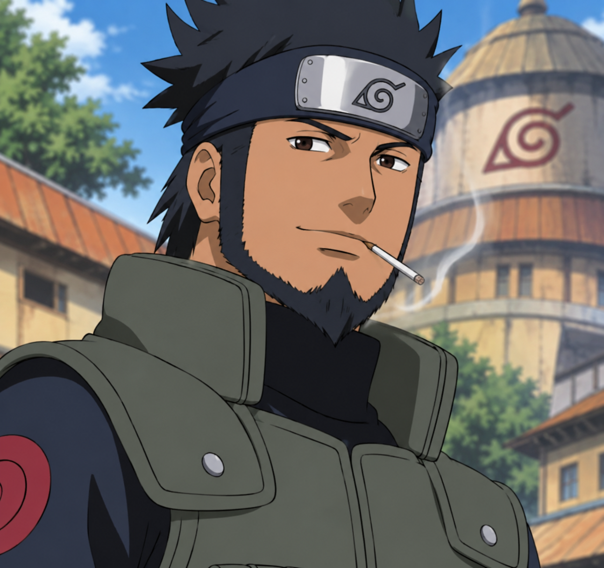
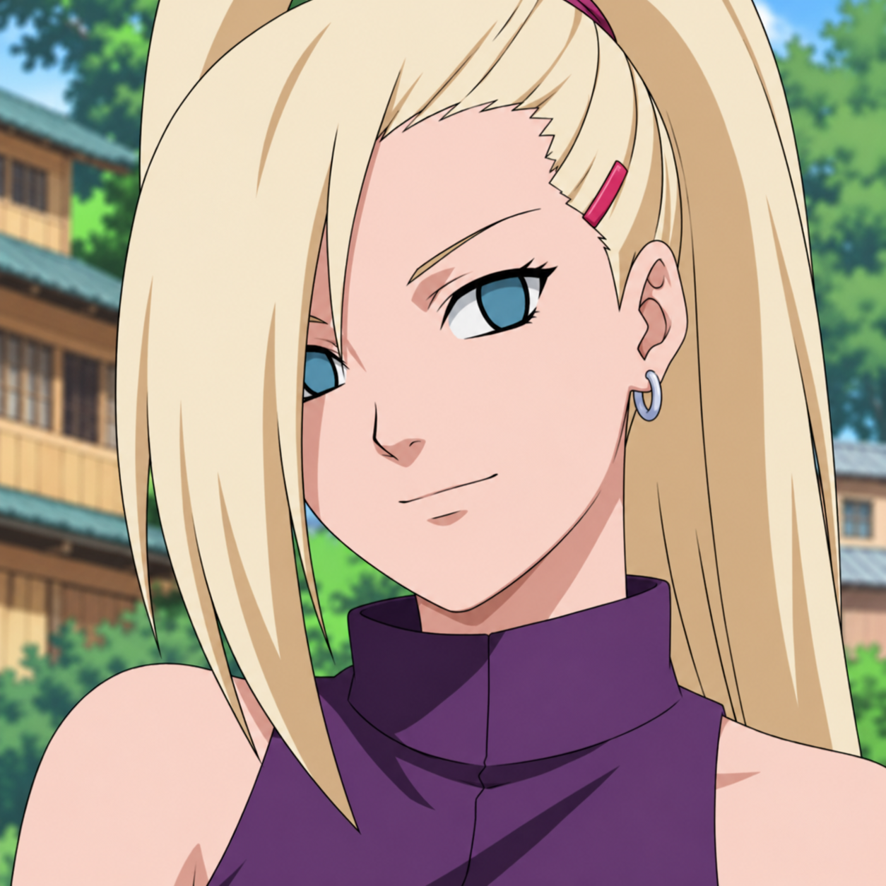
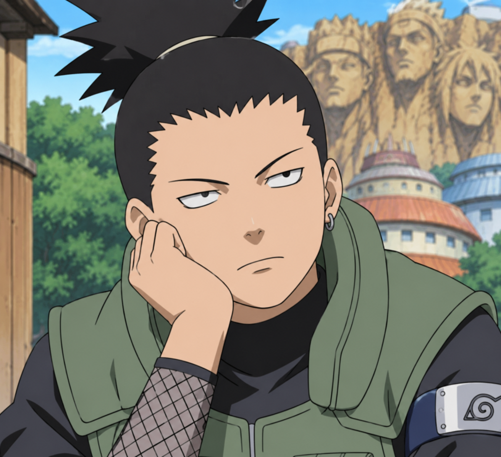
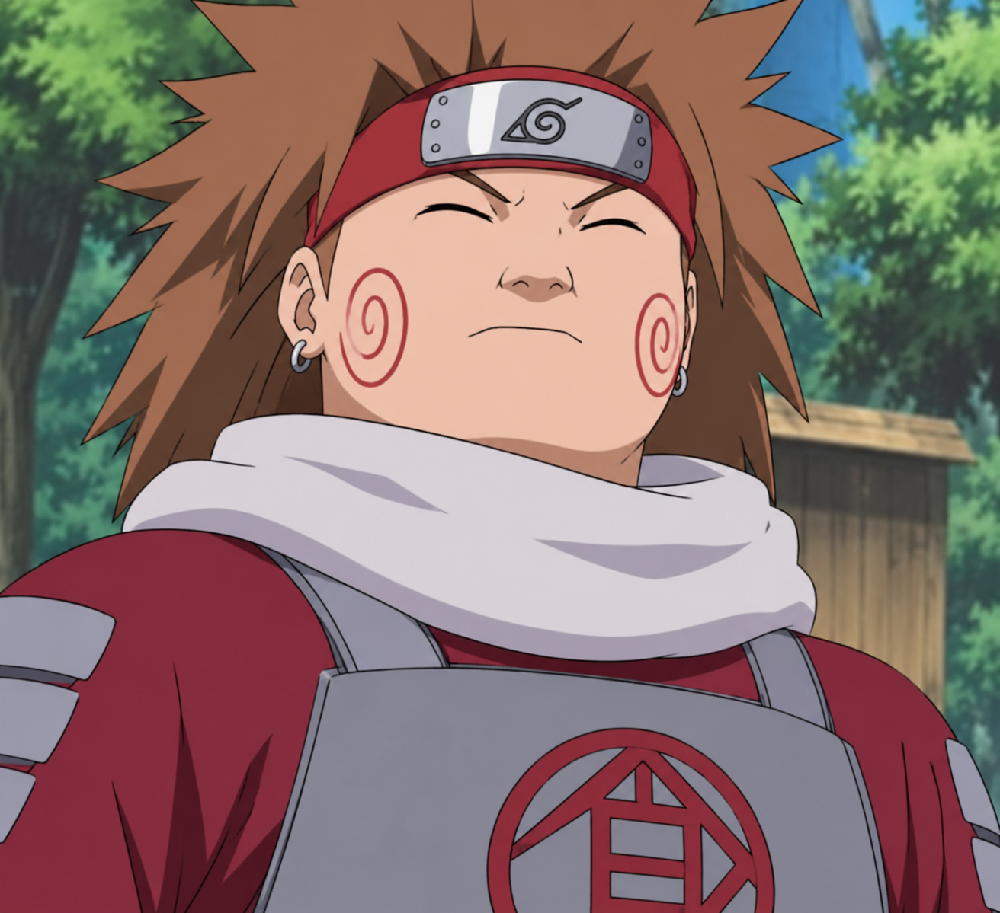

À l'époque, il a fait également partie, dans sa jeunesse, des « douze ninjas gardiens », un groupe constitué de ninjas d’élite dont la tâche est de protéger le seigneur (daimyo) du Pays du Feu. C'est à cause de ses nombreuses disputes avec son père, le 3e Hokage Hiruzen Sarutobi, qu'Asuma a décidé de quitter Konoha pour rejoindre les douze ninjas gardiens. Il devient d'ailleurs le meilleur ami de Chiriku. Plus tard, il se réconcilie avec son père et réintègre le village.

Ino est une kunoichi du village caché de Konoha, et membre du clan Yamanaka. Elle connaît beaucoup de choses sur la botanique, car son clan possède un magasin de fleurs où elle travaille souvent. La technique principale de son clan est la transposition, qui permet à l'utilisateur de s'approprier le corps de l'adversaire pendant environ cinq minutes.

À la fin de ses études à l’académie, Shikamaru est mis en équipe avec Ino Yamanaka et Chôji Akimichi sous les ordres d’Asuma Sarutobi. Leurs noms signifient respectivement « Sanglier », « Papillon » et Shikamaru veut dire « Cerf ». Ces trois animaux forment la combinaison gagnante du jeu de carte japonais hanafuda. Nara, son nom de famille, est le nom d'une ville proche de Kyôto, où de nombreux cerfs vivent en liberté.

À l'académie ninja, Chôji est sans cesse rejeté par ses camarades dans les jeux d’équipe, car il est trop lent à cause de son poids ; seul Shikamaru prend sa défense. Chôji en parle avec son père, Chôza, se plaignant que ses camarades n'arrêtent pas de dire que les Akimichi sont gros et lents ; ce dernier lui répond qu'il est plus gentil que tous les autres enfants, et donc se fera des amis très proches. Peu après, Chôji sympathise avec Shikamaru, et ils deviennent inséparables.
